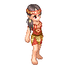
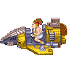

NPC介绍
|
NCP图片 |
NPC说明 |
| 【邮轮的船长】
看起来真像慈祥和蔼的老爷爷。 | |
| 【邮轮的船员】
担任海洋之星舵手的工作。 | |
| 【邮轮上的餐厅服务员】
头发超有特色的快餐餐厅服务生，温柔又细心！ | |
| 【杰克和萝丝】
非常恩爱的一对情侣，在游戏中总是成双成对的一起出现！ | |
| 【鲁宾逊】
凭着一身求生技能，独自在孤岛上生活了二十八年！ | |
| 【多尔】
克兰村的村民，他可是村中料理食物的高手喔！ | |
| 【爱蜜】
克兰村的女村民，对植物特别有研究。 | |
| 【艾力略】
他可是一个很痴情的人喔，希望玩家可以帮他解决一些困扰！ | |
| 【尤娜】
卖花的少女，了解很多花语的意思。 | |
|  | 【萝卡】
克兰村村长的女儿，别看她外表柔弱，却是不折不扣的女战士。 |
| 【小兰】
需要帮助的小女孩，就看您肯不肯帮她��！ | |
| 【基督村的神父】
虽然有慈善之心却无法抵抗权力！ | |
| 【修女米优娜】
在自己的信仰和深爱的人之间挣扎！ | |
| 【葡萄牙大航海家麦哲伦】
航海经验丰富的探险家，历时三年经过千惊万险，才完成环球航行！成为第一个环绕地球一周的人，并证明了地圆说。 | |
| 【中国航海家郑和】
郑和七次英雄式的远航，不仅开启了中国的航海时代，当时外国的货品、药物与地理知识，也以空前的速度输入中国。 | |
| 【英国库克船长】
库克船长是英国最伟大的探险家及地图绘制家之一，也是第一位踏上澳洲东岸和夏威夷的欧洲人。 | |
| 【大航海家哥伦布】
自小深受马可波罗影响，酷爱航海，为了理想而计划向远东出发，也因此发现了美洲大陆。 | |
| 【黑胡子船长】
海盗的首领，驾着”复仇女王”号挑战英国皇家海军，从此名震整个大西洋！ | |
|  | 【玛雅的火箭人】
类似飞行器的交通工具壁画，出现在远古的玛雅，令人讶异。 |
| 【英勇的玛雅战士】
以彩色羽毛为头饰、手执利茅的英勇武士。 | |
| 【外星人】
来自外层空间的异种生物。 | |
| 【遮光器土偶】
造型特异的土偶，硬度很高，其制作的方式超越了当时的技术。 | |
| 【浪人剑客】
凭着一身武艺，浪迹天涯。 | |
| 【后羿】
相传是嫦娥的丈夫，箭术高超，为了拯救天下百姓，一连射下九个太阳。 |